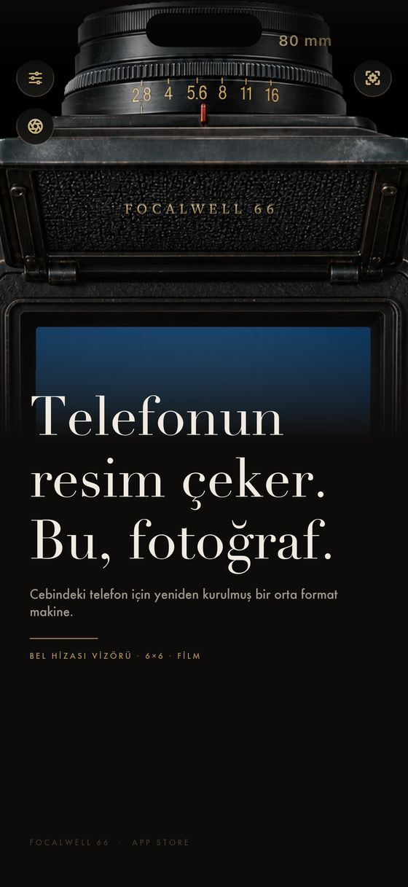
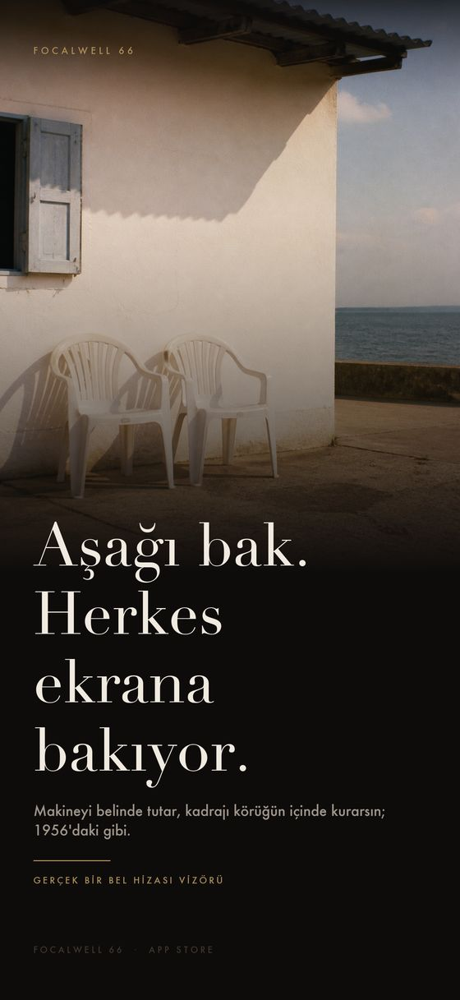
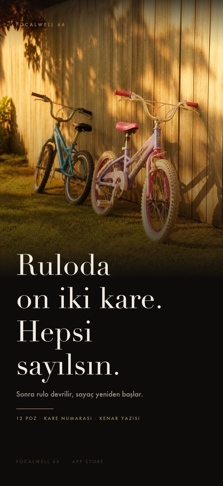
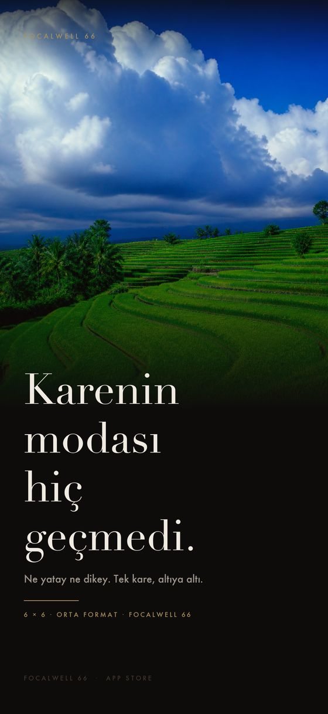
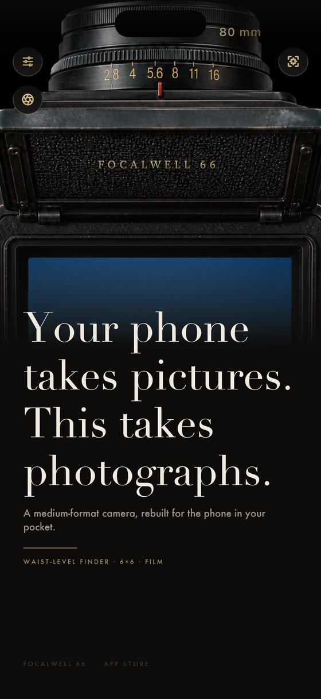
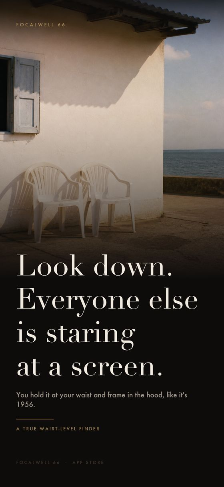
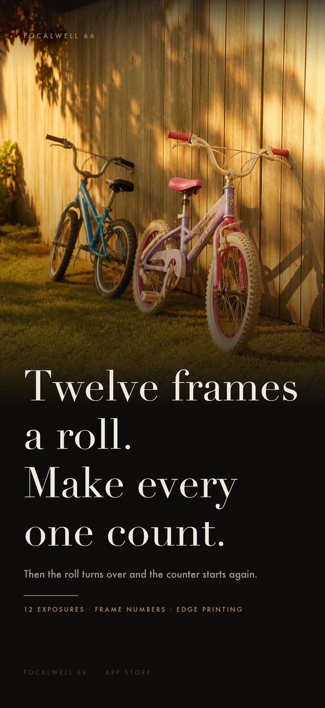
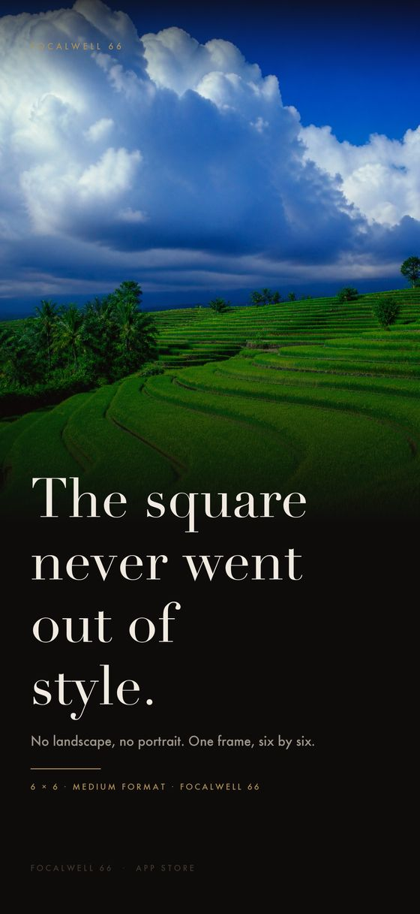

Telefonun resim çeker.
Bu, fotoğraf yapar.
Your phone takes pictures.
This takes photographs.
Bel hizasından bakılan klasik bir orta format makine, iPhone'un içinde. Aşağı bakarsın, kareyi matlı camda kurarsın, deklanşöre basarsın — ve kare hazır olana kadar beklersin.
A classic medium-format camera you look down into, rebuilt inside your iPhone. You look down, compose on the ground glass, press the shutter — and then you wait for the frame to come back.
App Store'dan indir Download on the App Store Instagram · @focalwell
Aşağı bak · kareyi kur · dik çek Look down · compose square · capture upright

- 6 × 6kare kadrajsquare frame
- 53filmfilm stocks
- 7objektiflenses
- 12kare / ruloframes a roll
Filtre uygulaması değil
Not a filter app
Aşağı bakarsın
You look down
Gerçek bir bel hizası vizörü: telefonu göğsünde tutar, kadrajı körüğün içinde kurarsın. Kimse sana baktığını anlamaz.
A true waist-level finder: you hold the phone at your chest and compose inside the hood. Nobody notices you shooting.
Filmi önce takarsın
You load the film first
Elli üç film, çekimden önce seçilir; kare o filmle doğar. Sonradan filtre denemek yok — ışığı önceden düşünmek var.
Fifty-three films, chosen before the shot; the frame is born on that film. No trying filters afterwards — you think about light first.
On iki karen var
You get twelve frames
Rulo başına on iki poz. Sayaç geri sayar, sonra rulo devrilir. Kıtlık her kareyi bir karar hâline getirir.
Twelve exposures a roll. The counter runs down, then the roll turns over. Scarcity turns every frame into a decision.
Seni bekletir
It makes you wait
Banyo süresini sen seçersin. Kare tanka düşer ve hazır olduğunda döner — bir dakika sonra da olabilir, bir saat sonra da.
You set the development time. The frame drops into the tank and comes back when it's ready — in a minute, or in an hour.








Ücretsiz başlar
Free to start
İndir ve çekmeye başla. Hesap yok, süre sınırı yok. Makinenin tamamını görür, bir kısmını kullanırsın.
Download and start shooting. No account, no time limit. You see the whole machine and shoot with part of it.
Makinenin tamamı açılır. Elli üç filmin hepsi — pastel tenler, doygun slayt yeşili, sert siyah-beyaz grisi, ağartması atlanmış editoryal gümüş. Yedi cam: balık gözünden kaydırmalıya. Sınırsız uzun pozlama ve çift pozlama, karanlık odanın hepsi. Ve durmuyor: yeni filmler güncelleme beklemeden makinene iner.
The whole machine opens. All fifty-three films — pastel skin, saturated slide green, hard black-and-white grey, bleach-bypassed editorial silver. Seven lenses, from fisheye to tilt-shift. Unlimited long and double exposure, the entire darkroom. And it keeps growing: new films arrive without waiting for an app update.
Kareleriniz sizde kalır
Your frames stay yours
Hesap yok, analitik yok, reklam kimliği yok, izleme yok. Uygulama internete yalnızca iki şey için çıkar: film kataloğu ve abonelik doğrulaması. Ayrıntısı gizlilik politikasında.
No account, no analytics, no advertising identifier, no tracking. The app goes online for two things only: the film catalogue and subscription verification. The detail is in the privacy policy.
Belgeler
Documents
Basın kitiPress kit
Gizlilik politikasıPrivacy policy
Kullanım koşullarıTerms of use